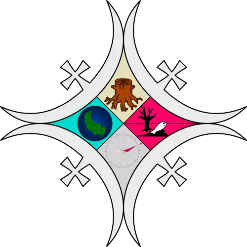
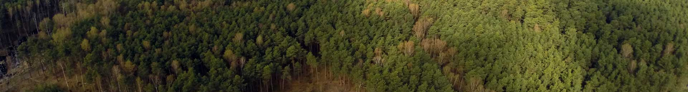

Spacer: Puszcza Kampinoska
Zapraszamy do wspólnego spaceru po fragmencie Szlaku Południowego Puszczy Kampinoskiej w najbliższą niedzielę, 25 maja.
Cała wycieczka ma długość ok. 32 km, ale można wycofać się wcześniej w Mariewie (po przejściu ok. połowy trasy), Truskawiu lub Sierakowie.
Jeśli planujesz się wybrać, koniecznie daj znać!
Godzina i miejsce zbiórki
niedziela 25 maja, godzina jeszcze do ustalenia z ew. chętnymi, 
 Metro Bemowo
Metro Bemowo
Z Metra Bemowa do Leszna będziemy jechać autobusem 719